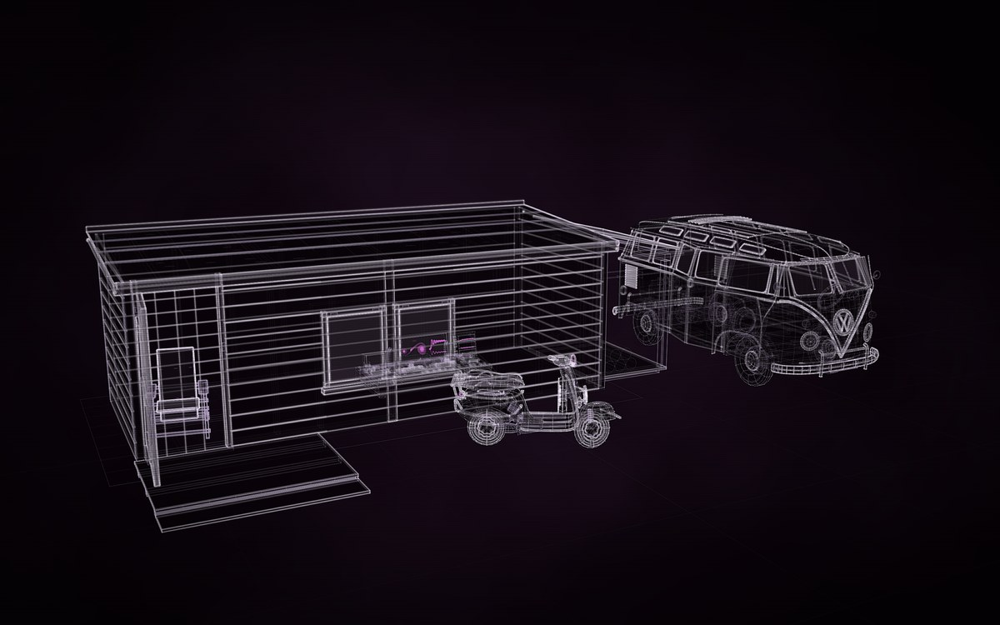

5 constructs, placed 5 times. Drag to turn it; the buttons are its views; P shows how each part is known, S shows it as a solid in its own colours.
Placed from the gallery: A garden shed, with a planned change, Volkswagen T1 Samba, Vespa GS 150, an owner's scooter, State Bench, an invented instrument, Rietveld Red-Blue Chair.